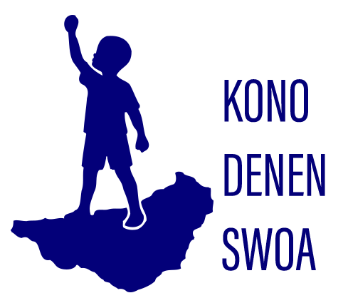

Kono Denen Swoa is a community-driven advocacy and development organization rooted in the heart of Kono District, Sierra Leone. Our name, which means “Kono Children Stand” in the Kono language, reflects our mission to uplift, empower, and give voice.
Our Vision
To create a thriving Kono community where every child and youth has the opportunity to reach their full potential, contribute to society, and celebrate their cultural identity.
Our mission
Founded with the belief that every child carries the promise of a brighter tomorrow, Kono Dinin Swa works to “retell Kono stories” honor the wisdom of our past, and build pathways of hope for the future. We recognize that storytelling is not only a cultural treasure but also a powerful tool for education, empowerment, and community transformation. Through stories of resilience, struggle, and triumph, we aim to inspire today’s generation to rise above challenges and drive sustainable development